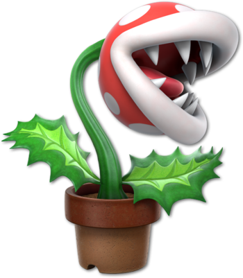
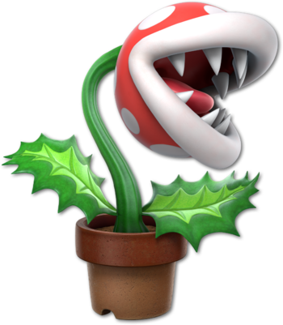
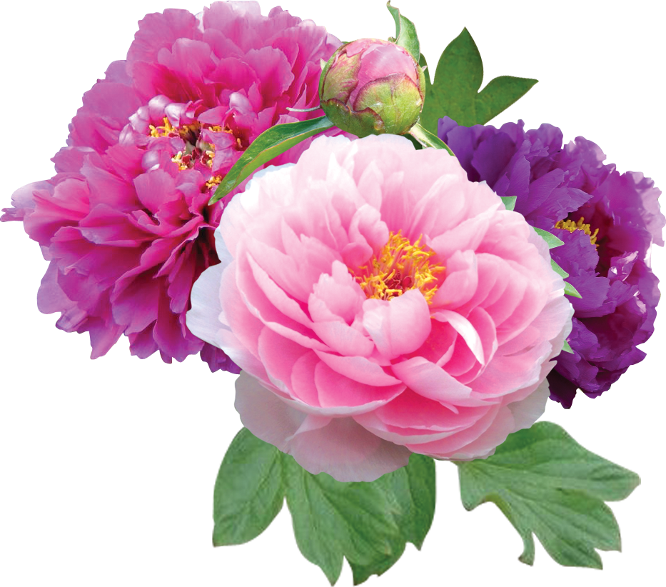

Hortensia
Entretien
- Arrosage : normal à humide
- Zones climatiques France : océanique,moyen,continental
- Période de plantation : Toute l'année (hors gel)
- Niveau de soin : facile
- Exposition : soleil,mi-ombre
- PH du sol : neutre,acide
- Composition du sol : normal,terre de bruyère,riche en humus
- Humidité du sol : normal,humide
- Température minimale : -20°C
- Utilisation en jardin : massif,haie,isolé,bac
- Utilisation pour la maison : terrasse
Caractéristiques végétales
- Feuillage décoratif : Oui
- Couleur fleur : blanc, rose et rouge
- Couleur feuille : vert
- Saison d'intérêt : printemps,été,automne
- Feuillage : caduc
- Largeur à maturité : 1,5 m
- Hauteur à maturité : 2 m
- Période de floraison : juillet à septembre
Botanique
- Rusticité : rustique
- Espèce : paniculata
- Température minimale : -20°C
- Nom botanique : Hydrangea paniculata
- Famille : Hydrangeacées
Entretien & plantation:
- Période de plantation : septembre à décembre
- Température minimale : °C
Caractéristiques végétales
- Feuillage décoratif : Non
- Période de floraison : mars à avril
Botanique
- Température minimale : °C
- Famille : Acanthacées
Pivoine
Iris
Entretien
- Arrosage : humide
- Zones climatiques France : océanique,moyen,continental
- Période de plantation : toute l'année hors gel
- Niveau de soin : facile
- Exposition : soleil,mi-ombre
- PH du sol : neutre
- Composition du sol : normal,calcaire
- Humidité du sol : normal,humide
- Température minimale : °C
- Utilisation en jardin : massif,haie,isolé,bac
- Utilisation en jardin : massif,bordure,berge,à naturaliser,isolé
Caractéristiques végétales
- Feuillage décoratif : Non
- Couleur fleur : bleue
- Couleur feuille : vert
- Saison d'intérêt : printemps
- Feuillage : persistant
- Largeur à maturité : 0.20 m
- Période de floraison : mars à avril
Botanique
- Rusticité : semi-rustique
- Espèce : Iris pumila
- Température minimale : °C
- Nom botanique : Iris pumila
- Famille : Iridacées
Entretien & plantation:
- Arrosage : modéré, nul en hiver
- Zones climatiques France : méditerranéen
- Niveau de soin : facile
- Composition du sol : normal,sableux
- Humidité du sol : sec
- Température minimale : -1°C
- Utilisation pour la maison : terrasse,veranda,intérieur
Caractéristiques végétales
- Feuillage décoratif : Oui
- Couleur fleur : blanc
Botanique
- Rusticité : non rustique
- Température minimale : -1°C
- Famille : Euphorbiacées
Cactus

Tulipe
Entretien
- Arrosage : modéré
- Zones climatiques France : méditerranéen,océanique,moyen,continental
- Période de plantation : fin septembre à décembre
- Niveau de soin : très facile
- Exposition : soleil
- PH du sol : neutre,acide,alcalin
- Composition du sol : normal,sableux
- Humidité du sol : normal
- Température minimale : °C
- Utilisation en jardin : massif,bordure,bac,balconnière
- Utilisation pour la maison : terrasse,balcon
Caractéristiques végétales
- Feuillage décoratif : Non
- Couleur fleur : orange rose
- Couleur feuille : vert
- Forme des fleurs : doubles
- Saison d'intérêt : printemps
- Feuillage : caduc
- Hauteur à maturité : 0,45 m
- Période de floraison : avril
Botanique
- Rusticité : rustique
- Espèce : Fleurs de pivoines
- Température minimale : °C
- Nom botanique : Tulipa 'Angélique'
- Famille : Liliacées